Spring Foraging Bundle
Spring Foraging Bundle

 Daffodil
Daffodil Leek
Leek Dandelion
Dandelion Reward:
Reward:|
Spring Foraging Bundle
|
|||
|---|---|---|---|
| Wild Horseradish | Spring Foraging | ||
| Daffodil |
Spring Foraging, buy from Pierre at Flower Dance | ||
| Leek |
Spring Foraging | ||
| Dandelion |
Spring Foraging, buy from Pierre at Flower Dance | ||
| Reward: |
Spring Seeds (30) | ||
 Summer Foraging Bundle Summer Foraging Bundle
|
|||
|---|---|---|---|
 Grape Grape |
Summer Foraging, Fall Farming | ||
 Spice
Berry Spice
Berry |
Summer Foraging, The Farm Cave (fruit bat option) | ||
 Sweet
Pea Sweet
Pea |
Summer Foraging | ||
| Reward: |
 Summer
Seeds (30) Summer
Seeds (30) |
||
Fall Foraging Bundle
|
|||
|---|---|---|---|
| 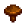 Common Mushroom | Fall Foraging, Spring & Fall Foraging in the Secret Woods, The Farm Cave (mushroom option), Tapping a Mushroom Tree | ||
 Wild
Plum Wild
Plum |
Fall Foraging, The Farm Cave (fruit bat option) | ||
 Hazelnut Hazelnut |
Fall Foraging | ||
 Blackberry Blackberry |
Fall Foraging, The Farm Cave (fruit bat option) | ||
| Reward: |
 Fall
Seeds (30) Fall
Seeds (30) |
||
 Winter Foraging Bundle Winter Foraging Bundle
|
|||
|---|---|---|---|
 Winter
Root Winter
Root |
Tilling soil or Artifact Spots in Winter, dropped by Blue Slimes on levels 41-79 of The Mines | ||
 Crystal
Fruit Crystal
Fruit |
Winter Foraging, dropped by Dust Sprites on levels 41-79 of The Mines | ||
 Snow
Yam Snow
Yam |
Tilling soil or Artifact Spots in Winter | ||
| 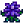 Crocus | Winter Foraging | ||
| Reward: |
 Winter
Seeds (30) Winter
Seeds (30) |
||
Construction Bundle
|
|||
|---|---|---|---|
 Wood (99) Wood (99) |
Chopping Trees or branches with an Axe | ||
| Wood (99) |
Chopping Trees or branches with an Axe | ||
 Stone (99) Stone (99) |
Smashing stones with a Pickaxe | ||
 Hardwood (10) Hardwood (10) |
Chopping Large Stumps or Large Logs with an upgraded Axe, smashing crates in The Mines | ||
| Reward: |
 Charcoal
Kiln (1) Charcoal
Kiln (1) |
||
 Exotic Foraging Bundle Exotic Foraging Bundle
|
|||
|---|---|---|---|
 Coconut Coconut |
Desert Foraging | ||
 Cactus
Fruit Cactus
Fruit |
Desert Foraging | ||
 Cave
Carrot Cave
Carrot |
The Mines, either smashing boxes or tilling soil | ||
 Red
Mushroom Red
Mushroom |
Foraging in The Mines, Summer or Fall Foraging in the Secret Woods, The Farm Cave (mushroom option), Tapping a Mushroom Tree | ||
 Purple
Mushroom Purple
Mushroom |
The Mines, The Farm Cave (mushroom option), Forest Farm Map Foraging in Fall | ||
 Maple
Syrup Maple
Syrup |
Tapped Maple Tree | ||
| 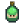 Oak Resin | Tapped Oak Tree | ||
 Pine
Tar Pine
Tar |
Tapped Pine Tree | ||
 Morel Morel |
Foraging in the Secret Woods in Spring, The Farm Cave (mushroom option) | ||
| Reward: |
Autumn's Bounty (5) | ||
Spring Crops Bundle
|
|||
|---|---|---|---|
 Parsnip Parsnip |
Spring Crops | ||
 Green
Bean Green
Bean |
Spring Crops | ||
 Cauliflower Cauliflower |
Spring Crops | ||
 Potato Potato |
Spring Crops | ||
| Reward: |
Speed-Gro (20) | ||
Summer Crops Bundle
|
|||
|---|---|---|---|
| Tomato | Summer Crops | ||
 Hot
Pepper Hot
Pepper |
Summer Crops | ||
 Blueberry Blueberry |
Summer Crops | ||
 Melon Melon |
Summer Crops | ||
| Reward: |
 Quality Sprinkler (1) Quality Sprinkler (1) |
||
Fall Crops Bundle
|
|||
|---|---|---|---|
| Corn | Summer / Fall Crops | ||
 Eggplant Eggplant |
Fall Crops | ||
| 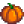 Pumpkin | Fall Crops | ||
 Yam Yam |
Fall Crops | ||
| Reward: |
 Bee
House (1) Bee
House (1) |
||
Quality Crops Bundle
|
||||
|---|---|---|---|---|
|
Gold quality Spring Crops | |||
|
Gold quality Summer Crops | |||
|
Gold quality Fall Crops | |||
|
Gold quality Summer / Fall Crops | |||
| Reward: |
Preserves Jar (1) | |||
Animal Bundle
|
|||
|---|---|---|---|
| Large Milk | Cows | ||
 Large
Egg (Brown) Large
Egg (Brown) |
Chickens | ||
| Large Egg | Chickens | ||
 Large
Goat Milk Large
Goat Milk |
Goats | ||
 Wool Wool |
Sheep, Rabbits | ||
| Duck Egg | Ducks | ||
| Reward: |
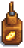 Cheese Press (1) | ||
Artisan Bundle
|
|||
|---|---|---|---|
 Truffle
Oil (1) Truffle
Oil (1) |
Made from Truffles using an Oil Maker | ||
 Cloth Cloth |
Loom, Recycling a Soggy Newspaper | ||
 Goat
Cheese Goat
Cheese |
Cheese Press | ||
| 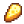 Cheese | Cheese Press | ||
 Honey Honey |
Bee House | ||
| Jelly | Preserves Jar | ||
| 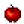 Apple | Apple Trees during Fall, The Farm Cave (fruit bat option) | ||
 Apricot Apricot |
Apricot Trees during Spring, The Farm Cave (fruit bat option) | ||
 Orange Orange |
Orange Trees during Summer, The Farm Cave (fruit bat option) | ||
 Peach Peach |
Peach Trees during Summer, The Farm Cave (fruit bat option) | ||
 Pomegranate Pomegranate |
Pomegranate Trees during Fall, The Farm Cave (fruit bat option) | ||
| Cherry | Cherry Trees during Spring, The Farm Cave (fruit bat option) | ||
| Reward: |
 Keg (1) Keg (1) |
||
River Fish Bundle
|
|||
|---|---|---|---|
 Sunfish Sunfish |
Found in Rivers, 6am – 7pm, Spring, and Summer during sunny weather. Found in the Riverlands Farm or in the Wilderness Farm pond during rainy weather. |
||
 Catfish Catfish |
Found in Rivers and Secret Woods Pond Anytime, Spring and Fall. Only when raining. | ||
 Shad Shad |
Found in Rivers, 9am – 2am, Spring, Summer, and Fall. Only when raining. | ||
| Tiger Trout | Found in Rivers, 6am – 7pm, Fall and Winter. | ||
| Reward: |
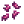 Bait (30) | ||
| Lake Fish Bundle
|
|||
|---|---|---|---|
 Largemouth
Bass Largemouth
Bass |
Found in the Mountain lake, 6am – 7pm, All Seasons. | ||
 Carp Carp |
Found in the Mountain lake, Anytime, All Seasons. Found in Cindersap Forest pond, Anytime, Spring, Summer, or Fall. Found in Secret Woods or Sewer, Anytime, All Seasons. |
||
| Bullhead | Found in the Mountain Lake, Anytime, All Seasons. | ||
 Sturgeon Sturgeon |
Found in the Mountain Lake, 6am – 7pm, Summer and Winter. | ||
| Reward: |
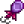 Dressed Spinner (1) | ||
 Ocean Fish Bundle Ocean Fish Bundle
|
|||
|---|---|---|---|
 Sardine Sardine |
Found in the Ocean, 6am – 7pm, Spring, Fall, and Winter. | ||
 Tuna Tuna |
Found in the Ocean, 6am – 7pm, Summer and Winter. | ||
 Red
Snapper Red
Snapper |
Found in the Ocean, 6am – 7pm, Summer and Fall. Only when raining. | ||
 Tilapia Tilapia |
Found in the Ocean, 6am – 2pm, Summer and Fall. | ||
| Reward: |
 Warp Totem: Beach (5) Warp Totem: Beach (5) |
||
|
Night Fishing Bundle
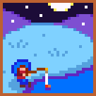
|
|||
|---|---|---|---|
 Walleye Walleye |
Found in Rivers, Lakes and Forest Pond, 12pm – 2am, Fall. Only when raining. | ||
 Bream Bream |
Found in Rivers, 6pm – 2am, All Seasons. | ||
 Eel Eel |
Found in the Ocean, 4pm – 2am, Spring or Fall. Only when raining. | ||
| Reward: |
 Small
Glow Ring (1) Small
Glow Ring (1) |
||
Crab Pot Bundle
|
|||
|---|---|---|---|
 Lobster Lobster |
Caught in Crab Pots | ||
 Crayfish Crayfish |
Caught in Crab Pots | ||
 Crab Crab |
Caught in Crab Pots, drops from Rock Crabs or Lava Crabs in The Mines | ||
| Cockle | Caught in Crab Pots, Beach Foraging | ||
 Mussel Mussel |
Caught in Crab Pots, Beach Foraging | ||
 Shrimp Shrimp |
Caught in Crab Pots | ||
 Snail Snail |
Caught in Crab Pots | ||
| Periwinkle | Caught in Crab Pots | ||
 Oyster Oyster |
Caught in Crab Pots, Beach Foraging | ||
 Clam Clam |
Caught in Crab Pots, Beach Foraging | ||
| Reward: |
 Crab
Pot (3) Crab
Pot (3) |
||
Specialty Fish Bundle
|
|||
|---|---|---|---|
| Pufferfish | Found in the Ocean, 12pm – 4pm, Summer during sunny weather. | ||
 Ghostfish Ghostfish |
Found in ponds in The Mines levels 20 and 60, Anytime, All Seasons. May also be dropped by Ghosts. | ||
 Sandfish Sandfish |
Found in the pond in The Desert, 6am – 8pm, All Seasons. | ||
| Woodskip | Found in the Secret Woods, Anytime, All Seasons. | ||
| Reward: |
 Dish
o' The Sea (5) Dish
o' The Sea (5) |
||
| Blacksmith's Bundle 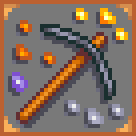
|
|||
|---|---|---|---|
| Copper Bar | Smelting Copper Ore in the Furnace | ||
 Iron
Bar Iron
Bar |
Smelting Iron Ore in the Furnace, Crafting the "Transmute (Fe)" recipe | ||
 Gold
Bar Gold
Bar |
Smelting Gold Ore in the Furnace, Crafting the "Transmute (Au)" recipe | ||
| Reward: |
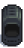 Furnace (1) | ||
Geologist's Bundle
|
|||
|---|---|---|---|
 Quartz Quartz |
Foraging on all levels of The Mines | ||
 Earth
Crystal Earth
Crystal |
Foraging on Levels 1-39 of The Mines, Geodes, Omni Geodes, drop from Duggies in the Mines (floors 1-29) | ||
 Frozen
Tear Frozen
Tear |
Foraging on Levels 40-79 of The Mines, Frozen Geodes, Omni Geodes, drop from Dust Sprites in the Mines (floors 40-80) | ||
| Fire Quartz | Foraging on Levels 80-120 of The Mines, Magma Geodes, Omni Geodes | ||
| Reward: |
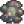 Omni Geode (5) | ||
Adventurer's Bundle
|
|||
|---|---|---|---|
 Slime (99) Slime (99) |
Dropped by Slimes | ||
| 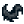 Bat Wing (10) | Dropped by Bats in The Mines | ||
| Solar Essence | Dropped by Ghosts, Squid Kids, or Metal Heads in The Mines, dropped by Mummies in the Skull Cavern | ||
| Void Essence | Dropped by Shadow Brutes in The Mines or Serpents in the Skull Cavern | ||
| Reward: |
 Small Magnet Ring (1) Small Magnet Ring (1) |
||
Chef's Bundle
|
|||
|---|---|---|---|
| Maple
Syrup |
Tapped Maple Tree | ||
 Fiddlehead
Fern Fiddlehead
Fern |
Summer Foraging in the Secret Woods | ||
| Truffle | Pigs | ||
| Poppy | Summer Crops | ||
 Maki
Roll Maki
Roll |
Cooking (recipe sources: The Queen of Sauce, The Saloon) | ||
| Fried Egg | Cooking | ||
| Reward: |
 Pink
Cake (3) Pink
Cake (3) |
||
Dye Bundle
|
|||
|---|---|---|---|
| Red
Mushroom |
Foraging in The Mines, Summer or Fall Foraging in the Secret Woods, The Farm Cave (mushroom option), Tapping a Mushroom Tree | ||
| Sea Urchin | Beach Foraging, after using 300 wood to fix the bridge to the right side of the beach | ||
 Sunflower Sunflower |
Summer / Fall Crops | ||
 Duck
Feather Duck
Feather |
Ducks | ||
| Aquamarine | Aquamarine Nodes and boxes in The Mines | ||
| Red Cabbage | Summer Crops (Red Cabbage Seeds are available at Pierre's General Store in year 2+) | ||
| Reward: |
Seed Maker (1) | ||
Field Research Bundle
|
|||
|---|---|---|---|
| Purple
Mushroom |
The Mines, The Farm Cave (mushroom option), Forest Farm Map Foraging in Fall | ||
 Nautilus
Shell Nautilus
Shell |
Winter Beach Foraging (Note: NOT the Nautilus Fossil artifact) | ||
 Chub Chub |
Can be found in the mountain lake and river during all seasons, any time. | ||
 Frozen
Geode Frozen
Geode |
The Mines Levels 40-79 | ||
| Reward: |
 Recycling Machine (1) Recycling Machine (1) |
||
Fodder Bundle
|
|||
|---|---|---|---|
 Wheat (10) Wheat (10) |
Summer / Fall Crops | ||
| Hay (10) | Purchase at Marnie's Ranch, or harvest grass with the Scythe once you have a Silo, and withdraw the hay from the Hay Hopper once you have a Coop or Barn | ||
| Apple (3) | Apple Trees during Fall, The Farm Cave (fruit bat option) | ||
| Reward: |
 Heater (1) Heater (1) |
||
| Enchanter's Bundle 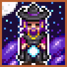
|
|||
|---|---|---|---|
| Oak Resin | Tapped Oak Tree | ||
 Wine Wine |
Keg | ||
 Rabbit's
Foot Rabbit's
Foot |
Rabbits, Serpent drop in Skull Cavern (0.8%) | ||
| Pomegranate |
Pomegranate Trees during Fall, The Farm Cave (fruit bat option) | ||
| Reward: |
Gold
Bar (5) |
||
| 2,500 Bundle | |
|---|---|
|
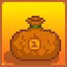
|

|
| Reward: |
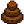 Chocolate Cake (3) |
| 5,000 Bundle | |
|---|---|
 |
|
| Reward: |
 Quality Fertilizer (30) Quality Fertilizer (30) |
| 10,000 Bundle |
|
|---|---|
 |
|
| Reward: |
 Lightning
Rod (1) Lightning
Rod (1) |
| 25,000 Bundle |
|
|---|---|
 |
|
| Reward: |
 Crystalarium (1) Crystalarium (1) |
 2,500g
2,500g